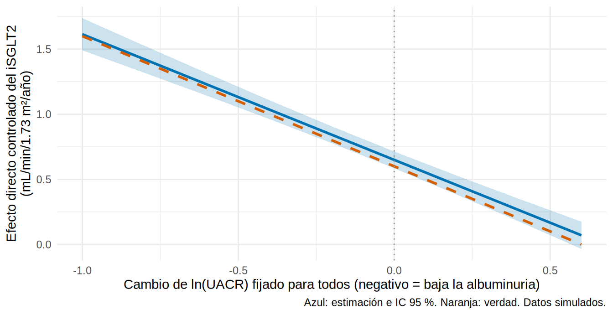
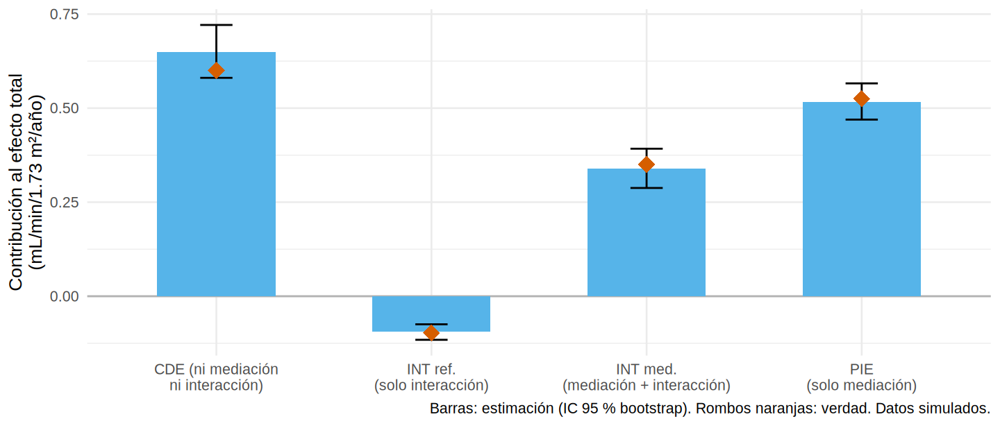

library(tidyverse)
library(boot)
library(marginaleffects)
library(survival)
source("R/funciones_epi.R")
source("R/funciones_extra_cap18.R")
source("R/simular_mediacion.R")
oraculo_i <- cargar_mediacion("_int") # SIMULADO: con interacción fármaco x mediador (theta3 = -1)
ckd_i <- observar_mediacion(oraculo_i)
verdad_i <- verdad_mediacion(oraculo_i)Mediación con interacción y desenlaces binarios o de supervivencia
Nota🩺 Escenario
En el subcapítulo anterior asumimos algo cómodo: bajar la albuminuria sirve igual con fármaco que sin él. Un nefrólogo lo duda: “el iSGLT2 protege los glomérulos hiperfiltrantes, así que quizá una misma baja de la UACR vale más en quien lo toma”. Eso es una interacción entre el fármaco y el mediador. Y hay una segunda duda: lo que importa a tus pacientes no es una pendiente sino un evento (diálisis, duplicación de creatinina), y eso se mide con riesgos, razones de riesgo o hazards.
Lo que vamos a hacer
- Distinguir los efectos naturales de los controlados y descomponer el efecto total en cuatro partes cuando hay interacción (VanderWeele).
- Estimarlo con la fórmula g y compararlo con la verdad.
- Pasar a un desenlace binario y a uno de supervivencia (Cox y AFT), sabiendo cuándo la aritmética de productos deja de valer.
Paso 1. Qué cambia cuando hay interacción
Hasta ahora el modelo del desenlace era \(Y = \dots + c'\,A + b\,M\): el efecto del mediador era el mismo con y sin fármaco. Con interacción añadimos el producto:
\[ E[Y \mid A, M, C] = \theta_0 + \theta_1 A + \theta_2 M + \theta_3\,(A \times M) + \dots \]
Ahora el efecto del fármaco depende del nivel del mediador, y no existe “el” efecto directo:
- Efecto directo controlado (CDE): el efecto del fármaco si fijamos el mediador en un valor \(m\) para todos: \(\theta_1 + \theta_3\,m\).
- Efecto directo natural (NDE): el efecto del fármaco dejando el mediador en lo que habría sido sin él: \(\theta_1 + \theta_3\,E[M(0)]\).
- Efecto indirecto natural (NIE): \((\theta_2 + \theta_3) \times a\), donde \(a\) es el efecto del fármaco sobre el mediador.
La diferencia clínica entre controlado y natural importa. El controlado responde: “si pudiéramos forzar la albuminuria a no cambiar en nadie, ¿cuánto haría el fármaco?” (una intervención hipotética sobre el mediador, que necesita solo los supuestos 1 y 2 de 18.3). El natural responde: “¿cuánto del efecto real pasa por la ruta de la albuminuria?” (necesita los cuatro supuestos).
Ajustemos el modelo con interacción en la base simulada que la contiene, y veamos si el coeficiente recupera el valor verdadero (\(\theta_3 = -1\)):
m_med_i <- lm(delta_lnuacr ~ isglt2 + I(edad / 10) + sexo + hba1c + pas + tfg_basal + luacr + ecv, data = ckd_i)
m_out_i <- lm(pendiente_tfg ~ isglt2 * delta_lnuacr + I(edad / 10) + sexo + hba1c + pas + tfg_basal + luacr + ecv, data = ckd_i)
m_out_sin <- update(m_out_i, . ~ . - isglt2:delta_lnuacr) # el mismo, sin interacción
coef(m_out_i)[c("isglt2", "delta_lnuacr", "isglt2:delta_lnuacr")] |> round(2) isglt2 delta_lnuacr isglt2:delta_lnuacr
0.65 -1.47 -0.97 anova(m_out_sin, m_out_i)Analysis of Variance Table
Model 1: pendiente_tfg ~ isglt2 + delta_lnuacr + I(edad/10) + sexo + hba1c +
pas + tfg_basal + luacr + ecv
Model 2: pendiente_tfg ~ isglt2 * delta_lnuacr + I(edad/10) + sexo + hba1c +
pas + tfg_basal + luacr + ecv
Res.Df RSS Df Sum of Sq F Pr(>F)
1 4990 5112.4
2 4989 4862.3 1 250.1 256.62 < 2.2e-16 ***
---
Signif. codes: 0 '***' 0.001 '**' 0.01 '*' 0.05 '.' 0.1 ' ' 1Qué vemos. El coeficiente de la interacción es -0.97 (verdad: -1). El signo negativo significa que una baja de la UACR (m negativo) mejora más la pendiente en los tratados. La prueba F de la interacción es contundente (F = 257, p < 0.001). Y atención: el coeficiente de isglt2 (0.65) ya no es “el efecto directo”: es el efecto del fármaco cuando el cambio de UACR es 0, es decir, el CDE(0).
¿Qué pasa si se ignora la interacción?
Primero lo “feo”. Si seguimos con el método de productos de 18.2 (que supone que no hay interacción), obtenemos:
ignorando <- ajustar_mediacion(ckd_i)
tibble(efecto = c("Directo", "Indirecto"),
`Productos (ignora la interacción)` = c(ignorando[["NDE"]], ignorando[["NIE_producto"]]),
Verdad = c(verdad_i[["NDE"]], verdad_i[["NIE"]])) |>
knitr::kable(digits = 2)| efecto | Productos (ignora la interacción) | Verdad |
|---|---|---|
| Directo | 0.75 | 0.50 |
| Indirecto | 0.67 | 0.87 |
Qué vemos. El directo sale 0.75 (verdad: 0.50) y el indirecto 0.67 (verdad: 0.87). La regresión sin interacción promedia dos pendientes distintas y reparte mal. Ahora lo bueno.
Paso 2. Efectos controlados: una curva, no un número
Con interacción, el CDE es una función del nivel de mediador. Con marginaleffects lo calculamos fijando delta_lnuacr en una malla de valores para todos los pacientes y comparando fármaco 1 frente a 0:
malla <- round(seq(-1, 0.6, by = 0.2), 1)
cde <- map_dfr(malla, \(m) {
avg_comparisons(m_out_i, variables = "isglt2", newdata = mutate(ckd_i, delta_lnuacr = m)) |>
as_tibble() |> transmute(m = m, est = estimate, inf = conf.low, sup = conf.high)
}) |>
mutate(verdad = 0.6 - 1.0 * m) # theta1 + theta3 * m, definido en el simulador
cde |> filter(m %in% c(-0.6, 0, 0.4)) |> mutate(across(everything(), \(x) round(x, 2)))# A tibble: 3 × 5
m est inf sup verdad
<dbl> <dbl> <dbl> <dbl> <dbl>
1 -0.6 1.23 1.14 1.31 1.2
2 0 0.65 0.58 0.71 0.6
3 0.4 0.26 0.18 0.35 0.2ggplot(cde, aes(m, est)) +
geom_ribbon(aes(ymin = inf, ymax = sup), fill = "#0072B2", alpha = 0.2) +
geom_line(color = "#0072B2", linewidth = 1) +
geom_line(aes(y = verdad), color = "#D55E00", linewidth = 1, linetype = "dashed") +
geom_vline(xintercept = 0, color = "grey60", linetype = "dotted") +
labs(x = "Cambio de ln(UACR) fijado para todos (negativo = baja la albuminuria)",
y = "Efecto directo controlado del iSGLT2\n(mL/min/1.73 m²/año)",
caption = "Azul: estimación e IC 95 %. Naranja: verdad. Datos simulados.") +
theme_minimal(base_size = 11)
Qué vemos. La línea azul tiene pendiente negativa: el efecto del fármaco “fuera” de la albuminuria crece cuanto más baja la UACR (hacia la izquierda). Con la albuminuria sin cambios (\(m = 0\)), el fármaco mejora la pendiente en 0.65 (verdad: 0.60); si la albuminuria baja un ~45 % (\(m = -0.6\)), el efecto sube a 1.23. El estimado sigue de cerca a la verdad (los IC del marginaleffects son los de un modelo ya ajustado).
Paso 3. La descomposición en cuatro vías
Si hay interacción, el efecto total puede repartirse en cuatro partes en lugar de dos (VanderWeele, 2014). Elegimos un nivel de referencia del mediador (aquí \(m^* = 0\), “sin cambio de UACR”) y preguntamos qué parte del efecto total se debe a:
- CDE (efecto directo controlado): lo que ocurriría sin mediación ni interacción: el fármaco actúa aunque la albuminuria no cambie.
- INTref (interacción de referencia): interacción sin mediación: aparece solo porque, sin fármaco, la albuminuria ya “se movía” respecto de la referencia.
- INTmed (interacción mediada): interacción y mediación a la vez: el fármaco baja la albuminuria y esa baja rinde más con el fármaco puesto.
- PIE (efecto indirecto puro): mediación sin interacción: la baja de albuminuria que tendría el efecto “estándar” aunque no hubiera interacción.
Suman el efecto total, y agrupadas de otras formas dan lo que ya conocemos: NDE = CDE + INTref, y NIE = INTmed + PIE. Con la fórmula g de 18.2 (efectos_naturales() + descomponer()) las estimamos todas a la vez; el IC lo da el bootstrap de todo el procedimiento:
fn_cuatro <- function(datos, i) {
d <- datos[i, ]
mm <- lm(delta_lnuacr ~ isglt2 + I(edad / 10) + sexo + hba1c + pas + tfg_basal + luacr + ecv, data = d)
my <- lm(pendiente_tfg ~ isglt2 * delta_lnuacr + I(edad / 10) + sexo + hba1c + pas + tfg_basal + luacr + ecv, data = d)
descomponer(efectos_naturales(d, mm, my, mval = 0))[c("TE", "CDE", "INTref", "INTmed", "PIE", "NDE", "NIE")]
}
set.seed(184)
b4 <- boot(ckd_i, fn_cuatro, R = 300)
cuatro <- tibble(efecto = names(b4$t0), estimado = b4$t0,
ic_inf = map_dbl(seq_along(b4$t0), \(k) boot.ci(b4, type = "perc", index = k)$percent[4]),
ic_sup = map_dbl(seq_along(b4$t0), \(k) boot.ci(b4, type = "perc", index = k)$percent[5]),
verdad = unname(verdad_i[names(b4$t0)]))
cuatro |> mutate(across(where(is.numeric), \(x) round(x, 2)))# A tibble: 7 × 5
efecto estimado ic_inf ic_sup verdad
<chr> <dbl> <dbl> <dbl> <dbl>
1 TE 1.41 1.33 1.5 1.38
2 CDE 0.65 0.58 0.72 0.6
3 INTref -0.09 -0.12 -0.07 -0.1
4 INTmed 0.34 0.29 0.39 0.35
5 PIE 0.52 0.47 0.57 0.53
6 NDE 0.55 0.47 0.63 0.5
7 NIE 0.86 0.78 0.93 0.87partes <- c("CDE", "INTref", "INTmed", "PIE")
etq <- c(CDE = "CDE (ni mediación\nni interacción)", INTref = "INT ref.\n(solo interacción)",
INTmed = "INT med.\n(mediación + interacción)", PIE = "PIE\n(solo mediación)")
cuatro |> filter(efecto %in% partes) |>
mutate(efecto = factor(etq[efecto], levels = etq)) |>
ggplot(aes(efecto)) +
geom_hline(yintercept = 0, color = "grey70") +
geom_col(aes(y = estimado), fill = "#56B4E9", width = 0.55) +
geom_errorbar(aes(ymin = ic_inf, ymax = ic_sup), width = 0.15) +
geom_point(aes(y = verdad), shape = 18, size = 4, color = "#D55E00") +
labs(x = NULL, y = "Contribución al efecto total\n(mL/min/1.73 m²/año)",
caption = "Barras: estimación (IC 95 % bootstrap). Rombos naranjas: verdad. Datos simulados.") +
theme_minimal(base_size = 10)
Qué vemos. El efecto total (1.41; verdad 1.38) se reparte así: el CDE aporta 0.65 (el fármaco “hace algo” aunque la albuminuria no cambie), el PIE 0.52 (la mediación “estándar”) y la interacción mediada INTmed 0.34 (el plus por el que una misma baja de albuminuria rinde más con el fármaco). La interacción de referencia es pequeña (-0.09): sin fármaco, la albuminuria casi no cambia respecto de la referencia, así que esa pieza casi no existe. Las agrupaciones recuperan lo habitual: NDE = 0.55 (verdad 0.50) y NIE = 0.86 (verdad 0.87).
La lectura clínica útil: “si además de dar el fármaco se lograra bajar la albuminuria, el beneficio sería mayor del que da el fármaco solo”, porque una parte del efecto (INTmed y PIE) requiere que baje la UACR y otra (CDE) no.
Advertencia⚠️ Con interacción hay dos “indirectos”
Con interacción exposición × mediador, el efecto indirecto depende de si lo evalúas con el fármaco puesto o sin él (NIE frente a NIE alternativo, que vimos al hablar de la proporción mediada en 18.1). Es decir, hay dos descomposiciones válidas y el reparto “% mediado” cambia según la elegida. Si el paquete que uses reporta ACME “(control)” y “(tratados)”, son estas dos. Di cuál reportas y por qué.
Paso 4. Un desenlace binario: riesgo, RR y la trampa del OR
Cambiamos el desenlace a evento renal a 36 meses (sí/no). Ahora se modelan riesgos y, con una regresión logística, los coeficientes están en la escala de odds ratios. Dos ideas:
- Si el evento es raro (menos de ~10 %), \(OR \approx RR\) y el método de productos aplicado a coeficientes logísticos (\(\exp(a \times b)\)) es una buena aproximación.
- Si el evento es común, el OR exagera el RR, y además el OR no es “colapsable”: el OR total no es la suma de directo e indirecto en escala logarítmica ni siquiera sin confusión.
La solución es la que ya usamos: la fórmula g, que promedia probabilidades y permite calcular razones de riesgos (RR) directamente. Con un solo estudio la comparación es ruidosa (un OR puede variar en ±0.1 de un estudio a otro, aun con 5 000 pacientes), así que repetimos el experimento en 20 estudios simulados de 5 000 pacientes y promediamos. Los dos mundos son idénticos salvo el riesgo basal: uno con evento raro y otro con evento común:
un_estudio_binario <- function(semilla, riesgo_basal) {
d_raw <- simular_mediacion(n = 5000, semilla = semilla, log_h0 = riesgo_basal)
d <- preparar_mediacion(d_raw)
mm <- lm(delta_lnuacr ~ isglt2 + I(edad / 10) + sexo + hba1c + pas + tfg_basal + luacr + ecv, data = d)
my <- glm(evento ~ isglt2 + delta_lnuacr + I(edad / 10) + sexo + hba1c + pas + tfg_basal + luacr + ecv, data = d, family = binomial)
gf <- descomponer(efectos_naturales(d, mm, my, sims = 20), "razon") # fórmula g: RR
v <- verdad_mediacion_riesgo(d_raw)
tibble(`riesgo sin fármaco (%)` = 100 * mean(d_raw$ev00),
`RR directo, verdad` = v[["RR_directo"]], `RR directo, fórmula g` = gf[["RR_directo"]],
`OR directo, logística` = exp(coef(my)[["isglt2"]]),
`RR indirecto, verdad` = v[["RR_indirecto"]], `RR indirecto, fórmula g` = gf[["RR_indirecto"]],
`OR indirecto, exp(a·b)` = exp(coef(mm)[["isglt2"]] * coef(my)[["delta_lnuacr"]]))
}
promedio_mundo <- function(riesgo_basal, B = 20) {
map_dfr(3000 + 1:B, \(s) un_estudio_binario(s, riesgo_basal)) |> summarise(across(everything(), mean))
}
binario <- bind_rows(`Evento raro` = promedio_mundo(-6.6), `Evento común` = promedio_mundo(-4.8), .id = "mundo")
binario |> pivot_longer(-mundo) |> pivot_wider(names_from = mundo, values_from = value) |>
knitr::kable(digits = 2, col.names = c("Medida (promedio de 20 estudios)", "Evento raro", "Evento común"))| Medida (promedio de 20 estudios) | Evento raro | Evento común |
|---|---|---|
| riesgo sin fármaco (%) | 7.02 | 32.89 |
| RR directo, verdad | 0.75 | 0.79 |
| RR directo, fórmula g | 0.71 | 0.79 |
| OR directo, logística | 0.68 | 0.69 |
| RR indirecto, verdad | 0.77 | 0.81 |
| RR indirecto, fórmula g | 0.77 | 0.80 |
| OR indirecto, exp(a·b) | 0.76 | 0.72 |
Qué vemos. Con evento raro (riesgo sin fármaco de 7 %), el producto \(\exp(a \cdot b)\) del efecto indirecto casi coincide con el RR verdadero (0.76 frente a 0.77). Con evento común (33 %), esa aproximación se rompe: 0.72 frente a 0.81; el OR exagera el efecto. Lo mismo pasa con el OR directo de la logística, que queda por debajo del RR verdadero en los dos mundos y más en el común (0.69 frente a 0.79). La fórmula g estima riesgos y no odds, y casi no se aparta de la verdad con evento común (RR directo 0.79, RR indirecto 0.80). Regla práctica: evento común, fórmula g (o riesgo estandarizado); evento raro, el producto de coeficientes basta.
Paso 5. Supervivencia: Cox y AFT, con cautela
Con tiempos hasta el evento hay dos familias de modelos. En el de Cox el efecto es un hazard ratio (HR); en el AFT (accelerated failure time) es una razón de tiempos (cuánto se alarga o acorta el tiempo hasta el evento). Aplicamos el método de productos a cada uno y lo comparamos con la verdad, en el mundo de evento común (n = 10 000):
d_raw <- simular_mediacion(n = 10000, semilla = 2031, log_h0 = -4.8)
d <- preparar_mediacion(d_raw)
conf <- "I(edad / 10) + sexo + hba1c + pas + tfg_basal + luacr + ecv"
m_med_s <- lm(as.formula(paste("delta_lnuacr ~ isglt2 +", conf)), data = d)
a_s <- coef(m_med_s)[["isglt2"]]
# --- Cox (escala log HR): total, directo e indirecto por producto
cox0 <- coxph(as.formula(paste("Surv(tiempo_meses, evento) ~ isglt2 +", conf)), data = d)
cox1 <- coxph(as.formula(paste("Surv(tiempo_meses, evento) ~ isglt2 + delta_lnuacr +", conf)), data = d)
cox_res <- c(total = coef(cox0)[["isglt2"]], directo = coef(cox1)[["isglt2"]], indirecto = a_s * coef(cox1)[["delta_lnuacr"]])
# --- AFT Weibull (escala log razón de tiempos): signo opuesto (más tiempo = menos hazard)
aft0 <- survreg(as.formula(paste("Surv(tiempo_meses, evento) ~ isglt2 +", conf)), data = d, dist = "weibull")
aft1 <- survreg(as.formula(paste("Surv(tiempo_meses, evento) ~ isglt2 + delta_lnuacr +", conf)), data = d, dist = "weibull")
aft_res <- c(total = coef(aft0)[["isglt2"]], directo = coef(aft1)[["isglt2"]], indirecto = a_s * coef(aft1)[["delta_lnuacr"]])
v_t <- verdad_mediacion_tiempo(d_raw) # verdad en log razón de tiempos
tibble(efecto = c("Total", "Directo", "Indirecto"),
`Cox: HR` = exp(cox_res),
`AFT: razón de tiempos` = exp(aft_res),
`Verdad: razón de tiempos` = exp(unname(v_t)),
`Verdad: HR` = exp(-unname(v_t))) |>
knitr::kable(digits = 2)| efecto | Cox: HR | AFT: razón de tiempos | Verdad: razón de tiempos | Verdad: HR |
|---|---|---|---|---|
| Total | 0.60 | 1.67 | 1.76 | 0.57 |
| Directo | 0.79 | 1.26 | 1.35 | 0.74 |
| Indirecto | 0.75 | 1.32 | 1.30 | 0.77 |
Qué vemos. El efecto total del fármaco prolonga el tiempo hasta el evento unas 1.7 veces (verdad: 1.8), con un HR de 0.60; de eso, el indirecto por la albuminuria corresponde a una razón de tiempos de 1.32 (verdad: 1.30) o a un HR de 0.75 (verdad 0.77). En este simulador los riesgos son proporcionales y los tiempos son exponenciales, así que Cox y AFT coinciden por construcción (HR = 1 / razón de tiempos). En datos reales eso es una excepción.
Advertencia⚠️ Mediación con supervivencia: tres cautelas
- El HR no es colapsable ni causal por sí mismo: sufre sesgo de selección condicional (los que sobreviven al inicio son distintos en tratados y controles) y su “producto” solo es una buena aproximación si el evento es raro o a corto plazo. En el AFT la aritmética es más limpia (el producto \(a \times b\) vale en escala log-tiempo bajo el modelo correcto), pero depende de la distribución elegida (Weibull, log-normal…).
- El mediador debe medirse antes del evento. Si hay pacientes que mueren o entran en diálisis antes de los 6 meses, no tienen mediador (sesgo de tiempo inmortal en la mediación, Cap. 10.2): se excluyen o se redefine el tiempo cero (un análisis landmark, como en 10.2).
- Interacción en supervivencia y riesgos competitivos (muerte frente a diálisis) exigen métodos específicos.
CMAverseadmite modelos de Cox y AFT en el desenlace (yreg), pero los riesgos competitivos requieren otros enfoques; aquí solo damos la idea.
Con el paquete mediation el mismo análisis con interacción se hace con mediate() sobre el modelo con isglt2 * delta_lnuacr (código no verificado en el entorno de pruebas del libro). El paquete detecta la interacción y entrega los dos indirectos, ACME(control) y ACME(tratados), y un contraste formal con test.TMint():
library(mediation)
set.seed(184)
med_int <- mediate(model.m = m_med_i, model.y = m_out_i,
treat = "isglt2", mediator = "delta_lnuacr",
boot = TRUE, boot.ci.type = "perc", sims = 500)
summary(med_int) # ACME (control) y ACME (tratados), ADE (control) y ADE (tratados)
test.TMint(med_int, conf.level = 0.95) # ¿hay interacción exposición x mediador?
Importante🎯 En resumen
- Con interacción fármaco × mediador ya no existe “el” efecto directo: hay uno controlado (a un nivel \(m\) del mediador) y uno natural, y dos efectos indirectos (con y sin fármaco).
- La descomposición en 4 vías reparte el total en CDE, INTref, INTmed y PIE. Ignorar la interacción reparte mal el efecto.
- Con desenlaces binarios, usa la fórmula g y reporta RR o diferencia de riesgos; el producto de coeficientes logísticos solo vale con evento raro.
- Con supervivencia, el AFT es más limpio que Cox para el método de productos, pero depende de la distribución; en cualquier caso, ojo con el HR, con el tiempo inmortal y con los riesgos competitivos.
Ejercicio
- Con
simular_mediacion(theta3 = 1)(la interacción cambia de signo), ¿cómo cambia la curva del CDE? ¿Qué parte del efecto total deja de ser “interacción positiva”? - Repite la descomposición en 4 vías con un nivel de referencia \(m^* = -0.35\) (
mval = -0.35enefectos_naturales()). ¿Cuáles de las cuatro partes cambian y cuáles no? Pista: el NDE y el NIE no dependen de \(m^*\). - En el Paso 4, sube el riesgo basal aún más (
log_h0 = -4o-3.5). ¿Qué tan lejos queda el OR directo del RR verdadero?